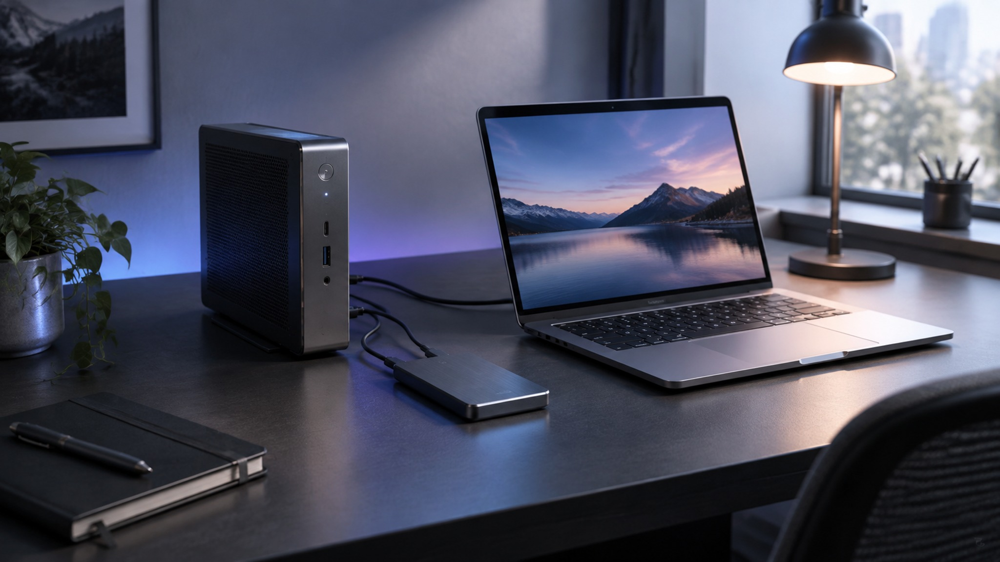
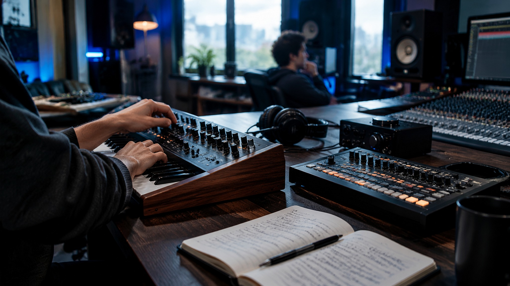
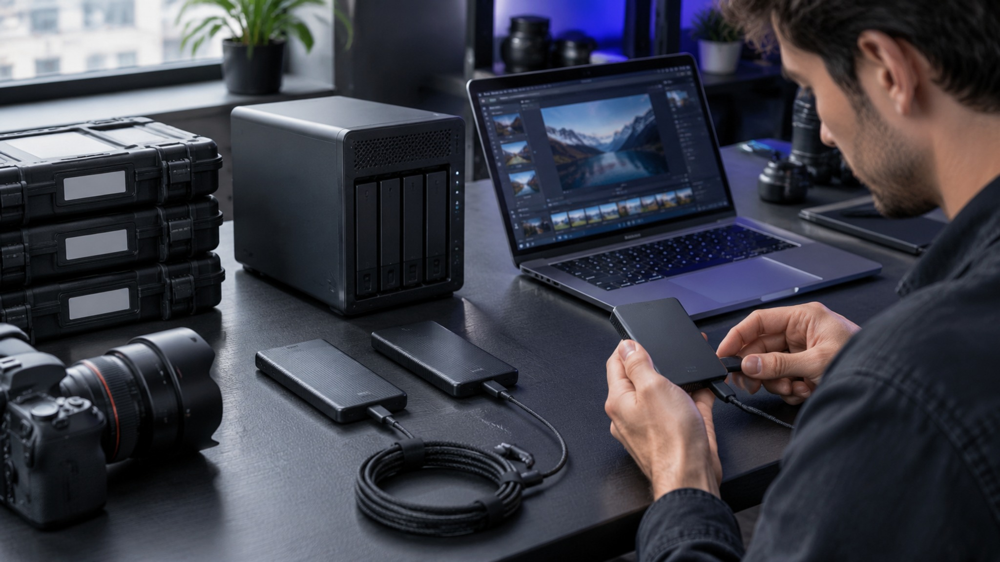

两大应用
想清楚，做出来。
Zealyn Duo · 创作中枢
先想清楚。
Agent 与画布，同在一个窗口。
说出目标，Agent 拆出步骤；素材落进画布，节点连成流程。Duo 负责把「想做的事」，变成「正在推进的项目」。
Agent 智能体拆解目标 · 连接文件与工具 · 计划随时可查
Canvas 无限画布提示词、图片、视频、声音，以节点连成流程
项目持续运行保存现场，随时回到离开的地方继续
双工作区常驻对话与画布自由切换，任务互不中断
能力导览
七个模块，各就各位。
Duo 的每一项能力，都在画布上拥有自己的位置。

Zealyn 创作工作区
从任务拆解、素材编排到生成与交付，各环节都在同一项目中衔接。
多模态生成图片 · 视频 · 音乐 · 声音，从文本或参考素材开始
本地项目库每个作品独立归档，素材与版本可备份、可导出
中文语音识别内置中文 ASR 与静音检测，剪辑辅助到字幕级
与画布互通生成结果回到 Canvas，成为下一步流程的输入

幕后
作品在台前，工程在幕后。
看不见的地方，Zealyn 一样认真。
本地优先
项目数据留在本机，打开即继续，无需等待云端同步。

数据可控
模型、同步与存储位置清楚可查，创作数据的去向你说了算。
自动备份
每次创作自动留档，误删与闪退都不再是创作的代价。
下载
把 Zealyn，装进口袋。
Zealyn Duo
Agent 智能体 × Canvas 无限画布
Sonder
图片 · 视频 · 音乐 · 声音
Windows 10 及以上 · macOS 13 及以上